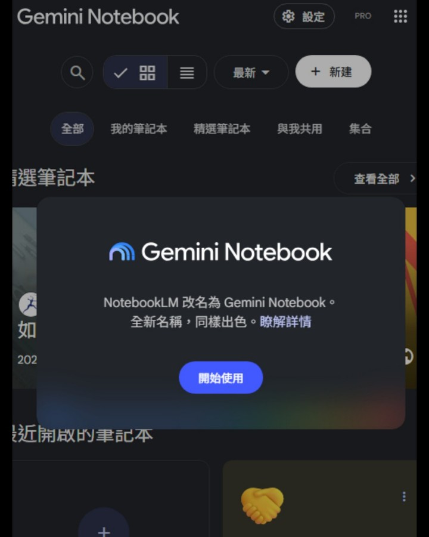

NotebookLM 改名 Gemini Notebook｜原生程式碼執行與 Google 生態整合
來源是老黑很不黑科技（@94eheima）的 Threads 貼文。貼文指出 NotebookLM 改名為「Gemini Notebook」，並強調三個變化：內建可原生執行程式碼、能對餵入資料做更深度的數據分析與運算、以及整合 Gemini 生態與 Google 搜尋。

一句話摘要
Google 已正式把 NotebookLM 更名為 Gemini Notebook；它仍是獨立研究工具，但開始被整合進 Gemini app 與 Google Search，並透過「安全雲端電腦」讓筆記本能原生寫程式、跑資料分析與產出更多格式。
Threads 可擷取資訊
| 欄位 | 內容 |
|---|---|
| 作者 | 老黑很不黑科技（@94eheima） |
| 可見時間 | 18 小時前（擷取於 2026-07-28） |
| 互動 | 約 1.0 萬次瀏覽、92 讚、2 則回覆、10 轉發、74 分享/引用（畫面快照） |
| 主文重點 | NotebookLM 改名 Gemini Notebook；內建直接原生執行程式碼；可對資料做深度數據分析與運算；整合 Gemini 生態與 Google 搜尋 |
| 作者補充 | 留言放 Google Blog、NotebookLM 網址與老黑技術快遞文章；強調可在知識庫內執行程式碼、減少資料貼來貼去 |
| 配圖 | Gemini Notebook 深色介面截圖，彈窗顯示「NotebookLM 改名為 Gemini Notebook。全新名稱，同樣出色。」 |
官方查核結果
Google 官方 Blog 文章《NotebookLM is now Gemini Notebook》（2026-07-16）確認：
- NotebookLM 正式更名為 Gemini Notebook。
- 它仍然是獨立產品，定位仍是研究工具。
- Google 宣稱已有超過 3,000 萬人與 60 萬個組織使用。
- 每個 notebook 會逐步獲得一個 secure cloud computer，讓 Gemini Notebook 能原生撰寫與執行程式碼。
- 原生程式碼執行可用於「grounded in your sources」的複雜資料分析。
- 功能當下先提供給 Google AI Ultra 使用者、具有 AI Ultra Access / AI Expanded Access 的 Workspace business customers，之後數週會在 web 版推給所有 Pro 使用者。
- Notebooks 可在 Gemini app 中建立與存取，並與獨立 Gemini Notebook 體驗同步；未來也會進入 Google Search 的 AI Mode。
另一篇 Google Blog《Do better research with NotebookLM》也補充，NotebookLM / Gemini Notebook 的新版研究能力包含更強推理、程式碼執行、產生圖表、試算表、投影片、PDF 報告，並可協助從 Google Search 找高品質來源加入筆記本；但使用者仍控制要加入哪些 sources，來源也會被標示。
這次升級真正重要的地方
1. Notebook 從「摘要工具」走向「研究執行環境」
過去 NotebookLM 最強的是把來源資料整理、摘要、問答、音訊概覽與簡報化。這次加入 secure cloud computer 後，它不只是讀資料，也可以開始對資料進行運算：清理表格、比對欄位、生成圖表、跑統計或產出報告。
對欒帥的 AI 學習雷達來說，這代表 NotebookLM / Gemini Notebook 可以被視為「研究工作台」，而不只是「文件聊天工具」。
2. 「來源 grounded」比一般 code interpreter 更適合研究流程
一般聊天型 code interpreter 常需要把資料上傳到對話中，再讓模型推理；Gemini Notebook 的定位是先建立來源庫，再在來源庫內做分析。這對以下情境特別有價值：
- 課程回饋問卷與訪談資料整理；
- 多份 PDF / Docs 的交叉比較；
- 產業報告與政策文件分析；
- AI 工具清單、價格表、功能矩陣整理；
- 把研究資料轉成圖表、試算表、投影片或 PDF 報告。
3. Gemini app 與 Search 整合，意味著研究資料會更接近日常工作流
官方說 notebooks 已可在 Gemini app 內建立與存取，並會同步到獨立 Gemini Notebook；未來也會出現在 Google Search 的 AI Mode。這表示使用者可能不再需要在「搜尋 → 複製 → 筆記本 → 分析」之間來回搬運，而是可以把搜尋、來源收集、筆記、分析與輸出放進同一條工作流。
給欒帥的使用策略
優先測試的 5 個場景
| 場景 | 測試方式 | 期待輸出 |
|---|---|---|
| 課程問卷分析 | 匯入 CSV / Sheets 匯出檔與課程大綱 | 滿意度趨勢、常見痛點、行動建議 |
| AI 工具比較 | 匯入多篇官方 docs / pricing / release notes | 工具矩陣、適用情境、限制表 |
| 週報素材整理 | 匯入一週 AI 學習雷達文章 | 週主題、可教學案例、投影片大綱 |
| 研究型簡報 | 匯入報告、Google Docs、網頁來源 | 圖表、投影片、講者重點 |
| 技術文件拆解 | 匯入 API docs / README / paper | 架構圖、實作步驟、風險清單 |
導入時要注意
- 先確認帳號方案：官方指出 Ultra / Workspace business 指定方案先有，Pro web 版逐步推出；不是所有帳號同時可用。
- 不要把含個資、報名名單、未公開課程資料直接丟進會外流的公開來源流程；若要分析敏感表格，需先確認 Google 帳號與資料治理邊界。
- 程式碼執行結果仍要人工抽查：欄位對齊、缺失值處理、中文分詞、統計假設與圖表標籤都可能出錯。
- 若要把它納入教學，建議示範「來源控管 → 問題定義 → 分析 → 圖表 → 報告」完整流程，不只展示聊天問答。
與既有知識庫的關聯
既有文章已收錄「Claude Cowork + NotebookLM 自動化工作流」，重點是用 Claude / Skill 操作 NotebookLM 做資料匯入、簡報與週報。這篇則補上 Google 官方產品層面的新變化：NotebookLM 變成 Gemini Notebook，並開始內建程式碼執行與 Google 生態同步。因此不合併進舊文，而是作為產品升級與研究工作台能力的獨立條目。
判讀限制
- Threads 貼文中的「能自己跑程式」已由 Google Blog 官方文章確認，但實際可用時間取決於帳號方案與 rollout。
- 「30M 使用者、60 萬組織」為 Google 官方宣稱的採用數字，屬於公告時間點資料。
- 本文沒有登入使用者 Google 帳號實測 secure cloud computer，也未驗證所有輸出格式是否已在台灣帳號上線。
- 配圖來自 Threads，畫面只證明介面更名提示，不足以證明每項功能已在該帳號可用。
原始連結
- Threads：https://www.threads.com/@94eheima/post/DbT73RbEubd
- Google Blog｜NotebookLM is now Gemini Notebook：https://blog.google/innovation-and-ai/products/gemini-notebook/notebooklm-gemini-notebook/
- Google Blog｜Do better research with NotebookLM：https://blog.google/innovation-and-ai/products/notebooklm/better-research-notebooklm/
- Google Blog｜Notebooks in Gemini：https://blog.google/innovation-and-ai/products/gemini-app/notebooks-gemini-notebooklm/
- Gemini Notebook / NotebookLM：https://notebooklm.google.com/